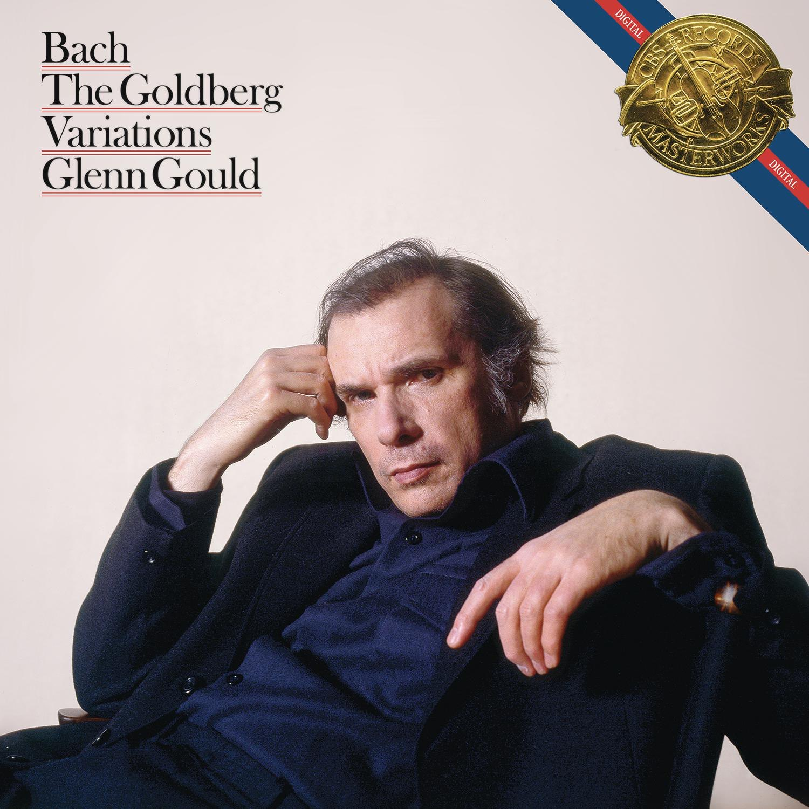

Album#2
Bach: Goldberg Variations (1981 Digital Recording)
{kind=link}

专辑信息
- 专辑名称：Bach: Goldberg Variations (1981 Digital Recording)
- 歌手：Glenn Gould
- 年份：1983-02-08 1
- 风格：古典钢琴曲
- 时长：约 50 分钟
哥德堡变奏曲 (Goldberg Variations) 是 巴赫 (Johann Sebastian Bach) 创作的作品，总共 32 首，由首尾旋律一样的 咏叹调 (Aria)，以及中间 30 首变奏组成。
关于哥德堡变奏曲的由来，一个广为流传的故事是：
[对于这部作品] 我们要感谢前俄罗斯驻萨克森选帝侯宫廷大使凯瑟林伯爵的促成，他经常在莱比锡停留，并带着前面提到的戈德堡来此，以便让巴赫给他音乐指导。
伯爵经常生病，夜不能寐。在这种时候，住在伯爵家里的戈德堡必须在客厅里过夜，以便在伯爵失眠时为他演奏。
……有一次，伯爵在巴赫面前提到，他希望为戈德堡创作一些羽管键琴曲，这些曲子应该具有流畅而略带活泼的特点，这样他可以在失眠的夜晚从中得到一些慰藉。
巴赫认为自己最能通过变奏曲来满足这个愿望，尽管他在此之前一直认为变奏曲的创作是一项吃力不讨好的任务，因为其和声基础反复相似。
但由于当时他所有的作品都已是艺术典范，所以这些变奏曲在他的手中也成为了典范。
然而，他只创作了这样一部作品。此后，伯爵总是称它们为他的变奏曲。
他从不厌倦它们，很长一段时间里，失眠的夜晚意味着：「亲爱的戈德堡，请为我演奏一首我的变奏曲。」
巴赫可能从未因他的作品而获得如此丰厚的回报。
伯爵赠予他一个装满 100 路易金币的金杯。
然而，即使礼物再大一千倍，也无法偿还其艺术价值。
不过不少人认为这个故事是伪造的，从听者的角度看，有的变奏曲旋律并不舒缓，显然不是为了安抚人睡眠而作的。
在哥德堡变奏曲里，有很多关于数字上的设计，也是对作曲的限制，但巴赫却在诸多限制下，创造了一部艺术性很高的作品。
在乐曲开头的咏叹调陈述之后，有三十个变奏。
这些变奏不遵循咏叹调的旋律，而是使用其低音线和和弦进行。
[…]
30 个变奏系列中，每隔两个变奏就是一个 卡农，遵循递增的模式。
因此，变奏 3 是同度卡农，变奏 6 是二度卡农（第二个进入的声部比第一个高二度），变奏 9 是三度卡农，依此类推，直到变奏 27，这是一个九度卡农。
最后一个变奏，不是预期的十度卡农，而是一个混合曲，将在下文讨论。
正如 Kirkpatrick 所指出的，介于卡农之间的变奏也以一种模式排列。
如果我们撇开作品的开头和结尾部分（特别是咏叹调、前两个变奏、混合曲和咏叹调返始），其余部分安排如下。
每个卡农之后紧接着的变奏是各种类型的体裁作品，其中包括三首巴洛克舞曲（4、7、19）；一首小赋格曲（10）；一首法国序曲（16）；两首为右手而作的华丽咏叹调（13、25）；以及其他（22、28）。
每个卡农之后隔两个的变奏（5、8、11、14、17、20、23、26 和 29）是 Kirkpatrick 所称的「阿拉伯风格变奏」；它们是活泼的快板变奏，有大量的双手交叉。
这种三元模式 ⸺ 卡农、体裁作品、阿拉伯风格变奏 ⸺ 总共重复了九次，直到混合曲打破了这个循环。
除了第 15、21 和 25 变奏曲是 G 小调外，所有变奏曲都是 G 大调。
在三十段变奏曲的末尾，Bach 写道 「Aria da Capo e fine」，意思是演奏者应回到开头（「da capo」）再次演奏咏叹调，然后结束。
除了上面说到的形式，再分享一些从播客2里听到的：
- 第 16 变奏曲 的名字是 Ouverture，即序曲，曲子一开始就是一个强音，像是一次重启，开始下一部分的演奏。第 16 变奏曲像是一个分水岭，将整部变奏曲一分为二。
- 第 21 变奏曲 听起来会可能会有些伤感，像是在内省，笼罩着阴翳；但衔接着它的 第 22 变奏曲，踏着第 21 变奏曲的最后一个音开始演奏，旋律变得活泼而明快，像是一束阳光照进了黑暗，带来了希望。
在诸多的哥德堡变奏曲中，最出名的应该是 格伦·古尔德 (Glenn Gould) 的版本，也就是这次分享的 Bach: Goldberg Variations (1981 Digital Recording)。
如果你仔细听，你会在这个版本中听到古尔德情不自禁的哼唱。
晚年的古尔德在录制完这部作品后，没多久就离世了，而在这部作品中最后的咏叹调，省略了一个音符，这个永远缺席的音符，或许是古尔德的一种遗憾，或许他感受到生命即将结束，带着遗憾告别了。
古尔德的演奏有两个比较知名的版本，一个是 55 年的版本，一个是 81 年的版本。前者让他成名，开始了他的演奏生涯，听起来节奏更快，更有活力；而后者则更深沉，像是一个人在深思内省，仿佛在这部作品中收束了他的人生。哥德堡变奏曲，开头和结尾是相同的咏叹调，中间是 30 首变奏，就像是出生和死亡，中间的变奏曲像是人生的各种经历。
其实我不太会欣赏古典乐，我对古典乐的理解就是：一般没有词，没人演唱，主要是旋律；大多数是钢琴曲、小提琴曲和其他管乐弦乐；往往有很多高超的演奏技巧；不像流行乐一样，有很容易记住的旋律，古典乐的旋律我往往很难记下来。
但我偶尔也会听古典乐，古典乐往往会给我带来一种安静的感觉，没有那么聒噪。因为我记不住旋律，我也不容易听厌，很适合作为工作时的背景乐。每当我想找一些古典乐作背景音，我都会想到古尔德的哥德堡变奏曲。
脚注:
哥德堡变奏曲 | 响声播客 (95mins)